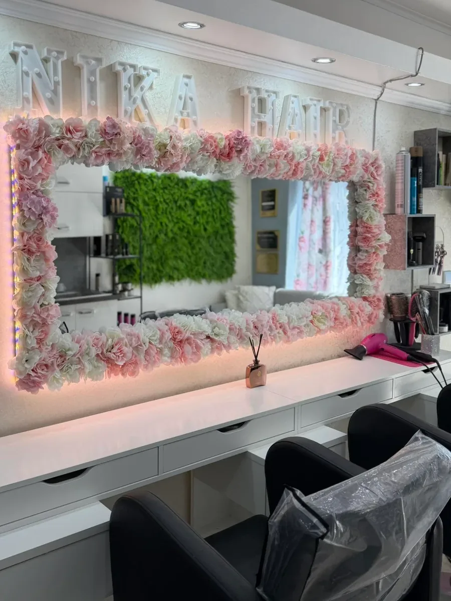
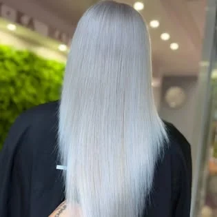
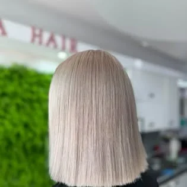
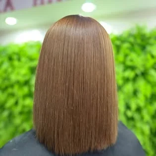
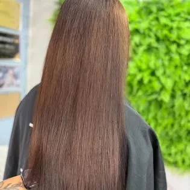
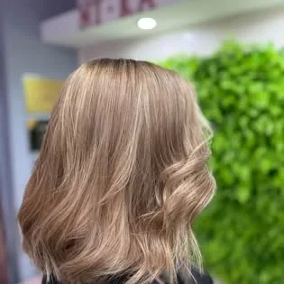

Kaderníctvo · Jozefa Braneckého, Trenčín
Ni-Ka HairMelír, balayage a farbenie v centre Trenčína
Coloristika, dámske aj pánske strihy, účesy a predlžovanie vlasov. Objednávky podľa salónu: dm alebo na tel.č
- 10,0Orly Kaderníctva · 85 hodnotení
- II.rebríček Orly Trenčín 2026
- 100 %odporúča na FB · 64 recenzií

Čo robíme
Farba je doma
Ponuka podľa úvodu Facebookovej stránky salónu — od jemného melíru po kompletné odfarbenie, plus strihy a účesy.
Doslova zo stránky salónu: Melírovanie/balayage/odfarbenie/farbenie/coloristika/účesy/strihy pánske/dámske/ predlžovanie vlasov
Ukážka návrhu: cenník a trvanie služieb doplní salón — zatiaľ nie sú nikde zverejnené.
- Melírovanie
- Balayage
- Odfarbenie
- Farbenie
- Coloristika
- Účesyaj spoločenské
- Strihy dámske a pánske
- Predlžovanie vlasov
Výsledky
Odtiene z kresla
Vlasy zozadu, tak ako ich salón zverejňuje na Facebooku. Popisy pod fotkami sú len odtiene, ktoré na fotke vidno.

ľadová blond 
platinový bob 
oriešková hnedá 
čokoládová dĺžka 
béžová blond, vlny
Fotky: Facebook stránka Ni-Ka Hair.
10,0Orly Kaderníctva85 hodnotení · stav 1. 10. 2026
II. miestorebríček Orly v Trenčíne 2026orlykadernictva.eu · 1. 10. 2026
100 %odporúča na Facebooku64 recenzií · 1. 10. 2026
V centre Trenčína sídli kadernícky salón Ni-Ka Hair, ktorý sa vyznačuje individuálnym prístupom…Popis salónu na portáli Orly Kaderníctva
Kontakt
Kde nás nájdete
- Adresa
- Jozefa Braneckého 162/14
911 01 Trenčín
Otvoriť v Mapách Google → - Telefón
- 0911 491 001
- nikahair03@gmail.com
- Hodiny
- Po – Pi9:00 – 19:00So9:00 – 12:00podľa verejných údajov, overiť